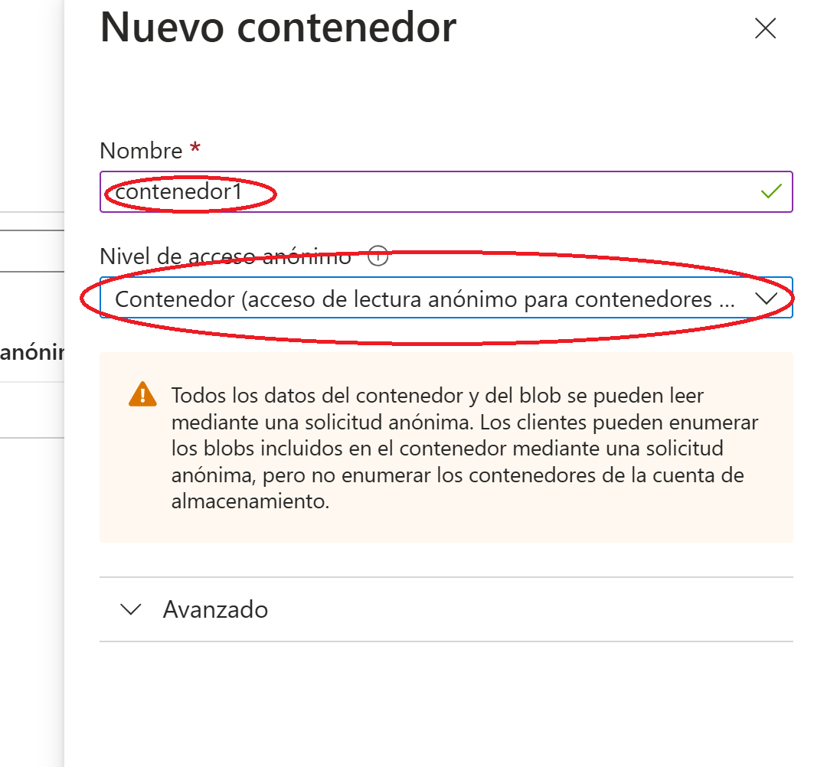
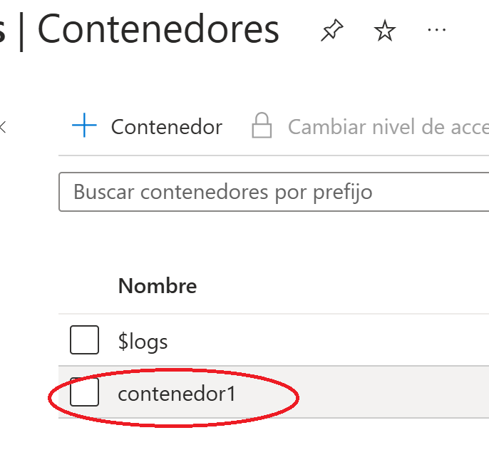

Descargar estos apuntes pdf o html
Antes de codificar en la App lo necesario para subir las imágenes al servidor, deberemos de preparar este para que pueda contener estos archivos. Para ello tendremos que entrar en el portar de Azures con la cuenta de Microsoft de alumno, y crear una cuenta de almacenamiento donde se alojen las imágenes, los pasos para hacerlo serán los siguientes.
Dentro del nives Cuenta de almacenamiento se pulsa en Crear para acceder a los pasos para crear el almacenamiento
Pasaremos a la siguiente ventana, donde Azure nos pedirá añadir el recurso que vamos a crear a un Grupo de recursos, si no tenemos ninguno o queremos añadirlo en uno nuevo, deberemos pulsar en Crear nuevo y añadir el nombre que queramos dar al grupo de recursos. También habrá que rellenar el nombre de la cuenta de almacenamiento, indicar que el Servicio principal es Azure Blob Storage o ...
y dejar el resto de elementos del formulario como se ven en la captura de ventana inferior.
Después pulsaremos sobre el botón Siguiente para avanzar a la siguiente ventana. Que nos llevará a la pestaña de Avanzado y en la que deberemos activar Permitir acceso anónimo, Habilitar el acceso a las claves y indicar que el Ámbito esta permitido desde cualquier cuenta de almacenamiento. Fíjate en la captura para dar los permisos necesarios, ya que después de la creación de la cuenta de almacenamiento, no se pueden modificar algunas de las opciones.
Ahora ya se puede saltar al último paso el de Revisar y crear, que pasará a la última pestaña donde podremos ver un resumen de las selecciones elegidas y al pulsar Crear pasará a crear el recurso.
Una vez creado, podremos verlo en los recursos de Inicio, o podemos pulsar sobre ir a recurso para acceder de forma directa.
Dentro de la cuenta de almacenamiento, deberemos crear un contenedor para poder añadir el contenido en este. Para crear el contenedor sobre el formulario de Contenedores solo habrá que pulsar sobre el símbolo + que está rodeado en la imagen. Añadir un nombre al contenedor y muy importante, seleccionar el nivel de acceso Contenedor
|

|

|
Una vez hecho esto tendremos todos los pasos completados y podremos seleccionar el contenedor creado para añadir directamente contenido o gestionar el contenido subido desde la App.
Para subir las imágenes al contenedor que hemos creado en la cuenta de almacenamiento de Azure, podemos elegir entre las siguientes dos técnicas, accediendo al ApiRest que Azure dispone para ello o usando los métodos del Azure SDK.
Si usamos Apirest, tendremos que crear una interface para el servicio de imágenes, como la siguiente:
interface ImageService {
@PUT
suspend fun subirImagen(
// La URL completa del Blob Storage con SAS Token
@Url url: String,
//Pasamos la imagen en el Body como stream
@Body requestBody: RequestBody,
//Indicamos a Azure que tipo de elemento se está subiendo,
//BlockBlob es el más común y sirve para imágenes
@Header("x-ms-blob-type") blobType: String,
): Response<Unit>
}
Siguiendo el patrón usado en clase, deberemos añadir al AppModule el proveedor de Retrofit con la url que corresponda al contenedor donde estamos guardando las imágenes.
@Provides
@Singleton
//Importante nombrar a este proveedor, para que el cliente sepa a que
//objeto Retrofit se está refiriendo ya que tendremos más de uno,
//el de la BD y el de imágenes
@Named("AzureRetrofit")
fun provideRetrofitAzure(
okHttpClient: OkHttpClient
) : Retrofit = Retrofit.Builder()
.client(okHttpClient)
//url de acceso a nuestro contenedor
.baseUrl("https://almacenimagenes.blob.core.windows.net/contenedor1/")
.addConverterFactory(GsonConverterFactory.create())
.build()
La url la podemos conseguirla al acceder a una imagen del contenedor, aunque su formato es http://nombre_de_tu_cuenta.blob.core.windows.net/nombre_de_tu_contenedor/
Además habrá que añadir el proveedor para ImageService que relaciona el proveedor anterior con el ImageService para las peticiones a Azure
@Provides
@Singleton
//Con @Named se identifica el proveedor de Retrofit que corresponde,
//el otro proveedor que tengamos también se tendrá
//que identificar con @Named
fun provideImageService(@Named("AzureRetrofit")
retrofit: Retrofit
) : ImageService = retrofit.create(ImageService::class.java)
Tendremos que añadir una función que acceda al método subirImagen de ImageService. Para poder hacer esto, tendremos que haberlo injectado anteriormente al constructor de la clase:
class ContactoServiceImplementation @Inject constructor(
private val contactoService: ContactoService,
//también se injecta un objeto de ImageService
private val imageService: ImageService
)
En la función subirImagen seguiremos el mismo formato de todas las de las clases ServiceImplementation. Le pasaremos como parámetro el nombre de la imagen y un RequestBody (stream de la imagen). Necesitaremos completar el nombre de la imagen con un SasToken que tendremos que recuperar del portal de azure. Para ello deberemos acceder a Token de acceso compartido del contenedor de nuestras imagenes, seleccionaremos los permisos marcados
Configuraremos una fecha de vencimiento de nuestro token, seleccionaremos la zona de Bruselas, protocolo https y http y pulsaremos Generar Token, después de pulsar veremos que se mostrará una cadena que tendremos que copiar para añadirla al nombre de la imagen.
Al llamar a subirImagen, además del nombre con SasToken de la imagen, el stream de esta, también habrá que pasar el tipo de archivo que vamos a subir, en este caso BlockBlob.
//SasToken recuperado de azure
private val sasToken = "sp=racwd***3D"
suspend fun subirImagen(imagen: String, requestBody: RequestBody) {
val urlPartial = "$imagen?$sasToken"
val mensajeError = "No se ha podido añadir la imagen"
try {
//Llamada al método subirImagen de ImageService
val response =
imageService.subirImagen(urlPartial, requestBody, "BlockBlob")
if (response.isSuccessful) {
Log.d(logTag, response.toString())
Log.d(logTag, response.body()?.toString() ?: "No hay respuesta")
} else {
val body = response.errorBody()?.string()
Log.e(logTag, "$mensajeError (código ${response.code()}): $this\n${body}")
throw ApiServicesException(mensajeError)
}
} catch (e: Exception) {
Log.e(logTag, "Error: ${e.localizedMessage}")
throw ApiServicesException(mensajeError)
}
}
Tendremos que añadir una función de suspensión en el Repository para que acceda a esta función:
suspend fun subirImagen(imagen: String, requestBody: RequestBody) =
withContext(Dispatchers.IO) {
contactoService.subirImagen(imagen, requestBody)
}
Y para finalizar en el ViewModel habrá que llamar a la función del repository pasando toda la información que necesita. Suponemos un evento de selección de imágenes dentro del ViewModel y que le asigna el nombre de la imagen a un contacto, además de actualizar el contacto en la BD y llamar al método de subirImagen anterior:
fun onContactoEvent(e: ContactoEvent) {
when (e) {
is ContactoEvent.OnChangeFoto -> {
//En el evento nos llegará el BitMap que habremos conseguido con el acceso a la cámara
//o con selección desde galería usando los permisos que ya se han explicado en clase
//Llamamos al método extensionStream con el Bitmap para extraer el tipo de extensión
//del archivo (el código del método se pasa bajo de este código)
val extension = extensionStream(e.imageBitmap)
val mimeType = "image/$extension"
val blobName = "imagen_${System.currentTimeMillis()}.${extension}"
contactoState = contactoState.copy(
id = e.contactoUiState.id,
nombre = e.contactoUiState.nombre,
urlFoto = blobName
)
//Se convierte la ImageBitmap a ByteArray con el método toBlob() de la librería
//de utilities de com.github.pmdmiesbalmis
val byteArray = e.imageBitmap.toBlob()
//Convertimos todos los Bytes en un tipo RequestBody
val requestBody =
byteArray.toRequestBody(mimeType.toMediaTypeOrNull(), 0, byteArray.size)
viewModelScope.launch {
contactoRepository.update(contactoState.toContacto())
//Llamamos al método del repository pasando el nombre y la imagen
contactoRepository.subirImagen(blobName, requestBody)
}}}}
El método que nos devuelve la extensión de objeto ImageBitmap seleccionado es el siguiente:
private fun extensionStream(imageBitmap: ImageBitmap): String {
val biteArray = imageBitmap.toBlob()
val inputStream = ByteArrayInputStream(biteArray)
val bytes = ByteArray(4)
inputStream.read(bytes)
val hexadecimal = bytes.joinToString(" ") { "%02X".format(it) }
val extension = when (hexadecimal) {
"FF D8 FF E0" -> "jpeg"
"89 50 4E 47" -> "png"
"47 49 46 38" -> "gif"
"25 50 44 46" -> "pdf"
else -> ""
}
inputStream.close()
return extension
}
Podemos ver que lo que hace es convertir la imagen a InputStream y leer los 4 primeros bytes de ese stream (esos primeros 4bits llevan la información del tipo de archivo). Los bites se unen en una cadena, separados por un espacio y se formatean a hexadecimal. Luego solo hay que comparar el resultado con los establecidos para cada uno de los tipos de imagenes más comunes.
Lo primero que tendremos que hacer, es añadir las implementaciones necesarias que permitan instanciar la clase BlobClientBuilder(). Esta clase pertenece a la biblioteca Azure Storage SDK para Java y permite construir un cliente (BlobClient) para interactuar con Azure Blob Storage. BlobClient o BlobAsyncClient, serán los que faciliten la cargar, descargar y manipulación de blobs (archivos) en Azure Blob Storage.
En el catálogo de versiones lib.versions.toml deberemos definido las librerías:
[versions]
azureStorage = "12.29.1"
[libraries]
azure-storage={group = "com.azure", name = "azure-storage-blob", version.ref = "azureStorage" }
En el build.gradle.kts del módulo de la aplicación (app) añadiremos:
dependencies {
implementation(libs.azure.storage)
}
La versión de la librería puede cambiar, pero puedes ver los últimos releases de la misma en el siguiente enlace: azure-storage-blob
Puede que nos ocurra un error de duplicidad en las entradas de la librería, por lo que si ocurre podremos solventarlo excluyendo las entradas en el build.gradle.kts del App de la siguiente manera:
packaging {
resources {
excludes += "/META-INF/{AL2.0,LGPL2.1}"
excludes += "/META-INF/INDEX.LIST"
excludes += "META-INF/io.netty.versions.properties"
}
}
Una vez tenemos preparado nuestro proyecto, podremos añadir el código que permite subir las imágenes, lo usual es que lo añadamos en el ViewModel que corresponda y lo que haremos será contruir un BlobClient con el siguente constructor:
val blobClient = BlobClientBuilder()
.connectionString(connectionString)
.containerName(containerName)
.blobName(blobName)
.buildClient()
Como se puede ver en el código, para construir el BlobClient necesitamos añadir la cadena de conexión, el nombre del contenedor y el nombre que queremos darle al archivo (blobName).
La cadena de conexión estará formada por el protocolo, el nombre de la cuenta, la clave de la cuenta y la url base de la siguiente (EndpointSuffix) forma:
val connectionString = "DefaultEndpointsProtocol=https;AccountName=nombre_cuenta;AccountKey=clave_cuenta;EndpointSuffix=core.windows.net"
El nombre del contenedor de nuestro ejemplo es "contenedor1"
una vez tenemos generado el blobClient, podemos subir la imagen a Azure de la siguiente manera:
blobClient.upload(fileStream, fileStream.available().toLong(), true)
Donde fileStream es un stream generado a partir de una imagen seleccionada, y el segundo argumento es el tamaño que tiene ese stream. True sobreescribe si ya existe.
Un ejemplo que podríamos localizar dentro de un evento de selección de imágenes dentro de un ViewModel y que le asigna el nombre de la imagen a un contacto, además de actualizar el contacto en la BD y de subir la imagen a Azure, sería el siguiente.
fun onContactoEvent(e: ContactoEvent) {
when (e) {
is ContactoEvent.OnChangeFoto -> {
//En el evento nos llegará el BitMap que habremos conseguido con el acceso a la cámara
//o con selección desde galería usando los permisos que ya se han explicado en clase
//Llamamos al método extensionStream con el Bitmap para extraer el tipo de extensión
//del archivo (el código del método se pasa bajo de este código)
//La cadena de conexión que se ha explicado con anterioridad
val connectionString = "DefaultEndpointsProtocol=https;AccountName=almacenimagenes;"+
"AccountKey=E2XnA***==;EndpointSuffix=core.windows.net"
val containerName = "contenedor1"
//Usamos el método extensionStream que nos devuelve la extensión del archivo
//de la ImageBitmap, este método está explicado con anterioridad
val extension = extensionStream(e.imageBitmap)
//Creamos el nombre de la imagen a partir de los milisegundos del sistema
//y le añadimos la extensión
val blobName = "imagen_${System.currentTimeMillis()}.${extension}"
//A partir de la ImageBitmap se crea el ByteArrayInputStream que se subirá al servidor
val biteArray = e.imageBitmap.toBlob()
val stream = ByteArrayInputStream(biteArray)
//Se crea el BlobClient
val blobClient = BlobClientBuilder()
.connectionString(connectionString)
.containerName(containerName)
.blobName(blobName)
.buildClient()
//Modificamos el estado del contacto
contactoState = contactoState.copy(
id = e.contactoUiState.id,
nombre = e.contactoUiState.nombre,
urlFoto = blobName
)
viewModelScope.launch {
contactoRepository.update(contactoState.toContacto())
//Subimos la imagen a Azure con el blobClient generado, pasando el ByteArrayInputStream y su tamañl
blobClient.upload(stream, stream.available().toLong(), true)
}
}}}
Esta manera de subir la imagen es de forma síncrona (Es decir, el proceso se bloquea hasta que se termine de subir la imagen) es la más común, si queremos hacerlo de forma concurrente, tendríamos que usar BlobAsyncClient:
BlobAsyncClient blobAsyncClient = new BlobClientBuilder()
.connectionString(connectionString)
.containerName(containerName)
.blobName(foto.jpg)
.buildAsyncClient();
// Subir un archivo de forma asíncrona
blobAsyncClient.uploadFromFile("ruta/local/foto.jpg")
.subscribe(
response -> //Código cuando OK,
error -> //error.getMessage()
);